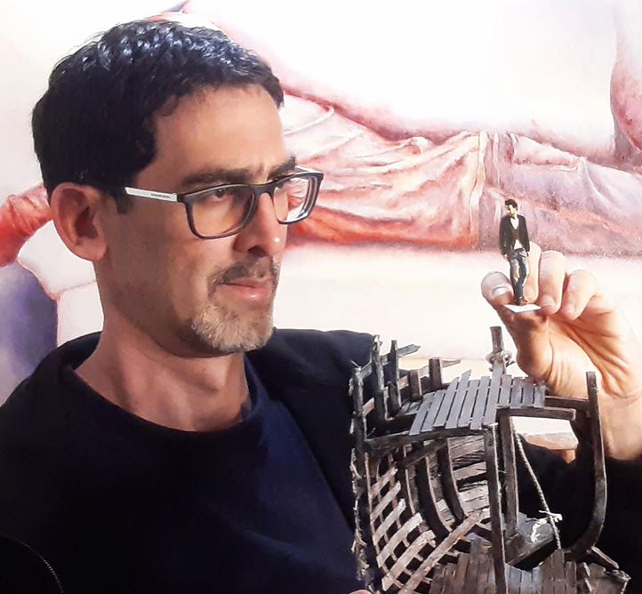

Equipo artístico
Julián Hoyos
Diseño escenográfico
Arquitecto y diseñador escénico, su práctica reúne ópera, teatro, danza y musicales entre Colombia y Estados Unidos.
Ver más
Estudió Arquitectura en la Universidad de Cornell y obtuvo una maestría en Diseño Escénico en New York University. Ha diseñado obras de teatro, musicales, óperas y piezas de danza.
En Estados Unidos ha colaborado con Pittsburgh Opera Center, New Opera NYC, Art Institute de Harvard y Repertorio Español. Junto a Pedro Salazar ha trabajado en La flauta mágica, Dido y Eneas, Trial by Jury, Florencia en el Amazonas, Así fue y El barbero de Sevilla.
Para el Teatro Mayor ha desarrollado recientemente las escenografías de Tosca, Las bodas de Fígaro, La traviata, La bohème y Nabucco. En el Teatro Colón de Bogotá diseñó La Cenicienta y las zarzuelas Cecilia Valdés y Los gavilanes. Su trayectoria también incluye trabajos para el Teatro Municipal de Santiago de Chile, MISI Producciones, L’Explose Danza y el Teatro Nacional.